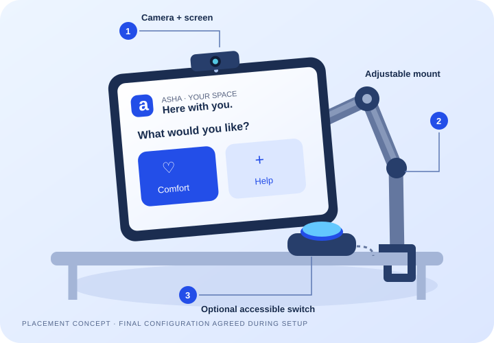

Asha Plus
$5/ month
Everyday communication and a connected caregiver.
- Core communication interfaces
- Adaptive access and AI sentence support
- Bangla + English companion support
- Caregiver requests and history


ASSISTIVE COMMUNICATION, REIMAGINED
When words are hard, connection shouldn’t be. Meet Asha—the companion that helps people express their needs in their own way.
Built for people. Designed around possibility.
Illustrative communication flow
Not everyone can speak. Everyone deserves to be heard.
Discover what’s possible ↗WHY WE’RE BUILDING ASHA
A neurological illness took a grandfather’s speech. His needs were still there. His way to call for help wasn’t.
That experience is at the heart of Asha. We’re building a bridge between what a person wants to say and the people who care for them.
Not another complicated dashboard. A calmer way to communicate, with support that adapts to what someone can comfortably do.
MANY WAYS TO SAY “I NEED YOU”
Speech, eyes, face or hands. A caregiver helps assess what works; Asha recommends a starting point without locking anyone out.
Guided calibration learns a personal baseline for deliberate blinks, smiles and head movements. A separate confirmation keeps ordinary movement from becoming an unintended request.
Explore FaceSpeak ↗All five modules are available in the live demo. Camera and microphone access begin only when you choose.
LESS GUESSWORK. MORE CONNECTION.
Asha supports the conversation. The patient stays in control, and the caregiver stays in the loop.
A caregiver sets up movement, speech, vision and hearing preferences. Practice the signals that feel comfortable.
Asha explains the next step, offers gentle check-ins and helps clarify speech. The patient confirms their meaning.
Confirmed requests reach the assigned care circle. The patient can see when a caregiver acknowledges them.
OPTIONAL ASHA KIT · PROPOSED HARDWARE ADD-ON
Start with your own compatible phone or tablet. Explore an optional camera, switch and mount configuration when a more stable bedside setup would help.

$100one-time · planned launch price
Subscription separate. No required kit purchase.Position the screen so the person can see it comfortably and the camera has a clear view of the face. Adjust the view to include hands or body when those modules are used.
Choose a compatible, secure mounting point with the caregiver. Check the screen angle, stability and cable route without obstructing access or care.
Discuss a comfortable, reachable switch position for users who prefer a physical input. Device and controller compatibility are checked before a configuration is agreed.
Proposed optional kit: camera, assistive switch and adjustable mount. Phone/tablet and subscription are not included. Compatibility, hardware availability and final contents are confirmed with the team before ordering.
Hospital pilot option: the pitch also proposes a refurbished Android tablet, ESP32 controller, mount, switch, enclosure and power/cabling. This is a separately scoped bedside configuration, not an included tablet in the $100 add-on.
Current demo: face, hand and posture sensing use the device camera. Physical switch/controller integration and on-site installation are pilot items to discuss, not guaranteed features of the browser demo. Final mounting follows the chosen hardware’s instructions and the care team’s requirements.
A SIMPLE START · PLANNED LAUNCH PRICING
Explore the demo today without purchasing a plan or kit. Subscriptions and hardware below are proposed launch offers; availability and scope are confirmed by the team.
$5/ month
Everyday communication and a connected caregiver.
$12/ month
A proposed path to more personalized care support.
$100/ once
A more stable setup, when it suits the person.
USD reference prices from the pitch deck—not a checkout or a payment request. The team confirms a written quote, availability and any delivery or installation scope.
A PERSON, NOT A DIAGNOSIS
Asha is being designed for people living with limited speech or movement, and the families and care teams beside them.
Find your starting point ↗After stroke, neurological illness or an accident.
For people who use alternative ways to express themselves.
For everyday needs when reaching or calling is difficult.
THOUGHTFUL BY DESIGN
Large controls, spoken guidance, light and dark modes. Details appear when you want them.
Camera sensing runs locally. AI clarification uses the cloud after opt-in; secret keys stay on the server.
Interpretations are suggestions. Care requests need confirmation. Asha supports human care, not replaces it.
WHAT’S NEXT
Our next chapter is learning alongside patients and caregivers in supervised pilots, before a wider rollout.
Meet the people building it ↓Working communication modules and connected care-circle testing.
Evaluate usability, reliability and caregiver workflows in real care settings.
Accessible communication that follows a person from hospital to home.
MEET THE TEAM
Technical implementation, product direction and care-focused business thinking, together.
Business & Strategy Analyst
A FEW THINGS TO KNOW
Yes. Explore all five modules in the live demo. Create a private care circle only to test delivery between patient and caregiver devices.
No. Asha is an assistive communication prototype, not a diagnostic or emergency service. VitalSense produces experimental camera estimates, not clinical measurements. Use validated equipment and professional care for medical decisions.
It offers brief conversation and guidance, and suggests meanings for unclear speech. Different tasks use different configured models. Retrieved app guidance and confirmed speech pairs ground replies; patients check interpretations before sending requests.
The live prototype is available to explore. Supervised validation and pilot evaluation come next. We welcome conversations with care teams and accessibility partners.
LET’S FIND THE RIGHT FIT
For families, care teams, hospitals and partners. Tell us what you want to explore—we’ll discuss the next step and confirm a suitable time.
Business enquiries only. Please don’t include patient names, medical records or urgent requests. This is not an emergency contact service.
LET’S MAKE CONNECTION POSSIBLE.